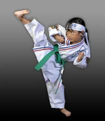

| Slow/strong strikes |
Fast/weak strikes |
Protection |
Values of TKD |

Through years of training, Taekwondo practioners obtain the ability
to perform maginficent feats of skill and strength. However, they would
not be able to perform these actions without first learning the core
principles and basic moves that lay the foundation for Taekwondo. You can
see the basic moves above. The first column, kicks, are slower more powerful,
strikes. They can do a lot of damage, but they also need to be set up with punches.
Punches(and strikes with your hand in general) are meant to create openings for your
kicks to come in. Blocks are good ways of protecting yourself from you opponent's
attacks in case you can not just dodge the strike. Finally, the mental aspect of
Taekwondo has and equal, if not greater value to a practioner than the physical
part. This is because, without a balanced mind, you will not be able to control yourself
in times when self-control is necessary.
All of these skills come with great responsibility, however. Taekwondo is only meant
to be used in self-defense. It should not be used to initiate a fight. This is where
the mental aspect of Taekwondo comes into play. You must learn to control yourself
in times when it is required to keep calm and not initiate a fight. All in all, Taekwondo
is a great martial art to learn if you are looking to improve your mental and physical health
as well as physical endurance.